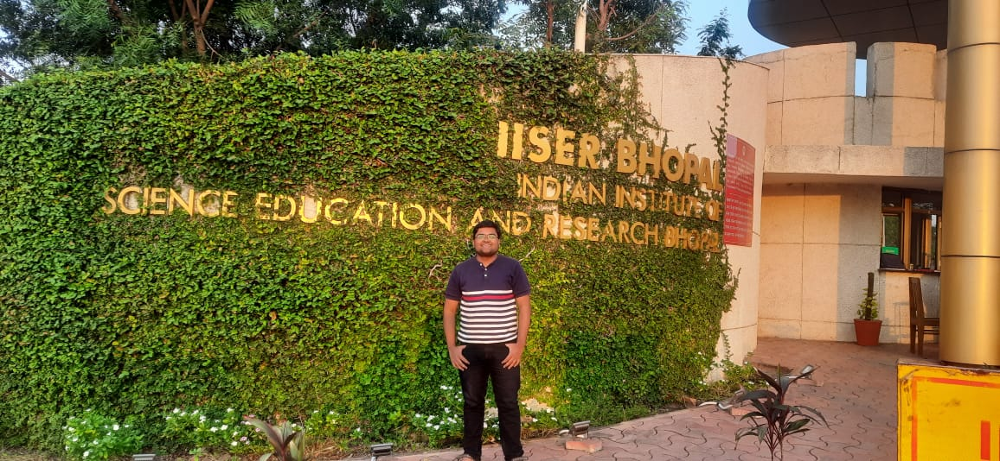
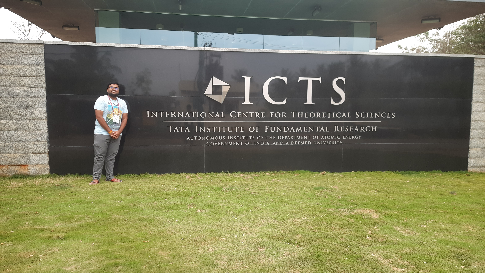
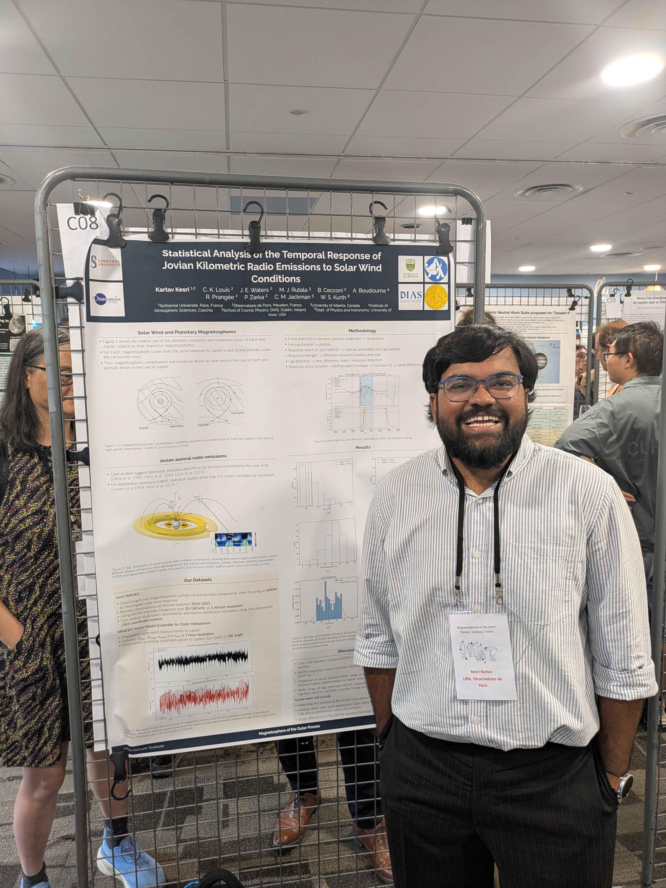

Scientific Visits

IISER

IIA, Bangalore

IISc — ASI Conference

ICTS-TIFR, Bangalore

Sorbonne Université

Université Paris Cité

Mercure Toulouse
Exploring the universe, one simulation at a time.
M2 Physics student currently working on the Jovian Magnetosphere at the Observatoire de Paris, Meudon. Passionate about plasma physics, MHD, radio waves, and general relativity.


